Turtle Graphics: Included in the sacco.jar class is the Turtle class. On construction, a Turtle opens up a window. If you then put the Turtle's penDown it will draw lines as you tell it to move and turn.
For Example: Create a class and run the following static method:
public static void turtleDemo()
{
Turtle t = new Turtle();
t.setTimeDelay(200);
//initial position
t.turnRight(90);
t.move(150);
t.turnLeft(90);
t.move(150);
t.turnLeft(90);
//drawing a square
t.penDown();
t.move(300);
t.turnLeft(90);
t.move(300);
t.turnLeft(90);
t.move(300);
t.turnLeft(90);
t.move(300);
t.turnLeft(90);
}
The turtle always starts in the center and facing north, so there is some moving in order to get into the correct starting position, and then it draws a 300 x 300 square.
Fractal making objects:
Copy the following class into your project. Note that it has a Turtle as an instance field, the constructor sets up that Turtle, and the design method draws a triangle. At the moment this is not a recursive fractal; it's just the framework that the Fractal will build on.
import sacco.*;
public class Koch
{
private Turtle t;
public Koch()
{
t = new Turtle();
//initial setup
t.setTimeDelay(20);
t.turnLeft(120);
t.move(250);
t.turnRight(150);
}
public void design(int count)
{
int sideLength=430;
t.move(sideLength);
t.turnRight(120);
t.move(sideLength);
t.turnRight(120);
t.move(sideLength);
}
public static void main()
{
Koch k = new Koch();
k.design(0);
}
}
Run the main method. It should get the following
Our goal is to replicate the Koch Snowflake. Which follows a simple pattern. Each generation it takes a straight line and put an equilateral triangle into it:
| One Generation: | Two Generations: | Three Generations: |
The way that we are going to make this fractal is by making a recursive method that will either draw a straight line, or draw a line with a kink in it.
1) Change your design method: At the moment, the design method draws lines using the move method. We need to do more than this, so replace every t.move(sideLength); with this.kochLine(sideLength,count); This will not compile yet. The sideLength variable will be used to determine how long the line should be, and the count variable is going to keep track of what generation we're on. At the moment, the main method is keeping it at 0, which will be the base case and simply draw a straight line.
2) Add the kochLine method:
Add the following incomplete method to the class. Notice that when the count is zero, a simple move method is called and no recursion happens.
public void kochLine(double length, int count)
{
t.penDown();
if(count==0)
{
t.move(length);
}
else
{
}
t.penUp();
}
If you compile and run your program now, since the method called is delay(0), It will draw the same exact triangle as before.
Finishing the kochLine method:
First, go to the main method and change the k.design(0); line to read k.design(1); We will just be testing with one generation just in case things get out of hand.
Now go to the kochLine method:
The idea is that when count is zero, a simple straight line is drawn (this is
already provided for you):
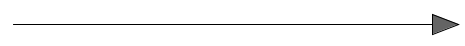
Otherwise, a kochLine has a kink in it:
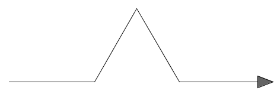
Fill in the else statements that will cause the turtle to make this design. Each segment is exactly one third the length of the whole line.
Keep in mind:
1) The kink in the middle is an equilateral triangle, meaning that turning
60 and 120 degrees at some points would be a good idea.
2) We don't want to draw with just regular old move method
calls. Instead each of these lines should be kochLines.
Every place that you think a t.move(length/3) would be appropriate, instead use
this.kochLine(length/3, count - 1); This will cause the count to get
closer to zero, but still add kinks when there
3) In order for this recursion to work, the Turtle must end up in the exact same location and in the exact same direction it would if we had just drawn the straight line. If you don't take care of this, the fractal will spiral out of control.
Testing it out:
Once you think you've drawn the line properly, run the main method. If everything's done properly, the design should look like this:
Test the next generation: Change the main method to read k.design(2); and hopefully you have the following:
If those work, you're probably set. You can quickly run the designs by adding the following method, which lets you enter the number of generations as a parameter:
public static void kochSnowflake(int count)
{
Koch k = new Koch();
k.design(count);
}
Test it on some higher numbers, but be warned that each generation increases the amount of moves exponentially and you might get stuck waiting for the thing to finish for a long time.
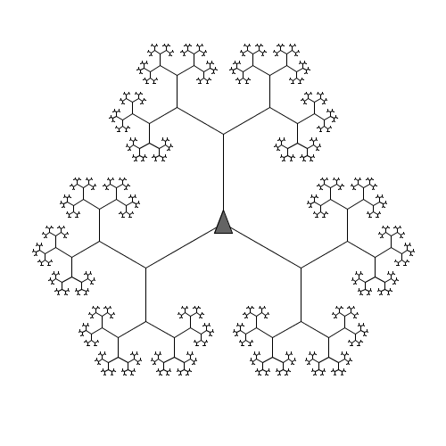
Copy the following code to your project folder:
import sacco.*;
public class Branches
{
private Turtle t;
public Branches()
{
t = new Turtle();
t.setTimeDelay(10);
}
public void design(int count)
{
branch(100,count);
t.turnRight(120);
branch(100,count);
t.turnRight(120);
branch(100,count);
t.turnRight(120);
}
public void branch(double length, int count)
{
double mult = .6;
}
public static void main(int count)
{
Branches b = new Branches();
b.design(count);
}
}
This time the branch method is the recursive one. The count and length variables are going to have the same purpose that they did in the previous fractal. Fill in the code so that it does the following:
When count is equal to 0:
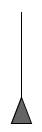
Notice that theTurtle drew a line and then returned to the exact position that it started. When backtracking, it looks cleanest if you call t.penUp().
When count is greater than zero:
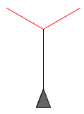
The two red lines are calls to this.branch(mult*length), count -1);. Keep in mind that since the red lines are calls to the branch method, the Turtle will end up exactly where it started and you will not have to backtrack. You will still have to backtrack over the black line to return back to the original position.
The design method draws three trees in a circle:
| Zero Generation | One Generations | Four Generations | |
|
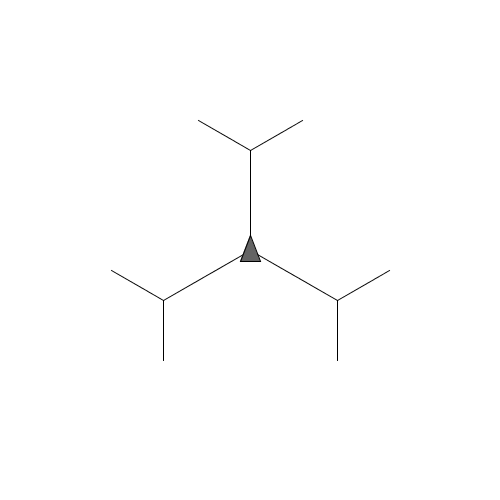 |
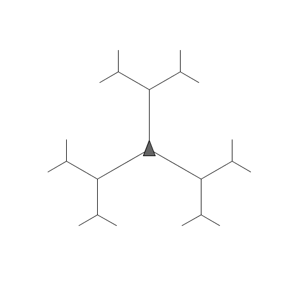 |
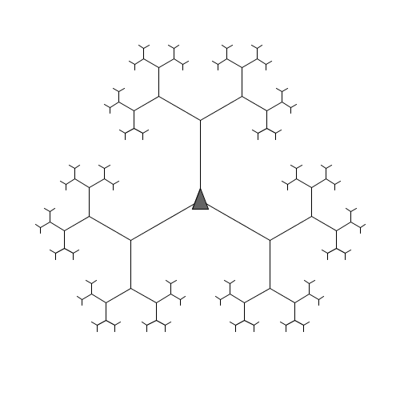 |
| One Generation | Two Generations | Three Generations | Six Generations | |
Copy the following class to your project folder:
import sacco.*;
public class Sierpinski
{
private Turtle t;
public Sierpinski()
{
t = new Turtle();
t.setTimeDelay(10);
t.turnRight(90);
t.move(225);
t.turnRight(90);
t.move(190);
}
public void design(int count)
{
//Draws the top two sides of the triangle, which the recursion doesn't cover
int sideLength = 450;
t.penDown();
t.turnLeft(210);
t.move(sideLength);
t.turnLeft(120);
t.move(sideLength);
t.turnLeft(120);
this.triLine(sideLength,count);
}
public void triLine(double length, int count)
{
t.penDown();
//code goes here
}
public static void main(int count)
{
Sierpinski s = new Sierpinski();
s.design(count);
}
}
The key to this fractal is to know that we're only drawing the upside-down triangles to achieve the effect we're looking for. As part of the design the top and bottom of the triangle are drawn manually, and then the triLine method is called.
Fill in the triLine method so that it does the following:
When count is 0:
When count is greater than 0
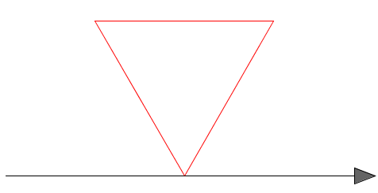
The turtle will go halfway, draw a triangle using triLines of half the length, and then finish out the line.
We are making it so that triangles can sprout out of the left of the triLine. This means that the path that the turtle takes is very important. Follow the path below to ensure that the triangles spawn on the outside.
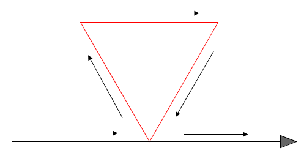
One more generation would add the other three triangles:
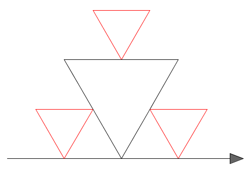
This design is accomplished by first drawing a square, and then drawing a smaller square inside of that one, and a smaller one inside of that.
Copy the following program to your project folder:
import sacco.*;
public class Square
{
private Turtle t;
public Square()
{
t = new Turtle(501,501);
t.setTimeDelay(20);
t.move(250);
t.turnLeft(90);
t.move(250);
t.turnLeft(90);
}
public void drawSquare(double length, int count)
{
t.penDown();
}
public static void main()
{
Square s = new Square();
s.drawSquare(500,1);
}
}
Finishing drawSquare:
The drawSquare method's job is to always first draw a square of the given length and ending up facing the exact way as it started. After that, if the count is greater than 0, move forward a little bit, turn left a little bit, then call the drawSquare method with a smaller length and count.
The amount that you move needs to be precise. Use the following variables:
double portion = .1; double angle = Math.toDegrees(Math.atan(portion/(1-portion))); double newLen= portion*length/Math.sin(Math.toRadians(angle));
The portion variable represents how far down the outer tringle to move before turning, the angle variable represents how far to turn, and the newLen variable is the length of the smaller triangle.
Test out your program and see if it draws a square inside of another square. If that works, modify the main method so that it works with higher numbers of generations.
Modifying it to lose the count:
For this project, the count variable is not actually necessary. We want the design to continue until the squares are as tiny as can be. Go to the drawSquare method and delete the count variable from its parameters. Then modify your if statement so that the recursive method is called as long as the length is greater than 2. This should cause it to draw as many squares as it needs to until they are very tiny. You will also have to remove the parameter from any calls to the drawLine method in order to get it to compile.
Run the main method. It should continue looping, but stop one it has filled in the center.